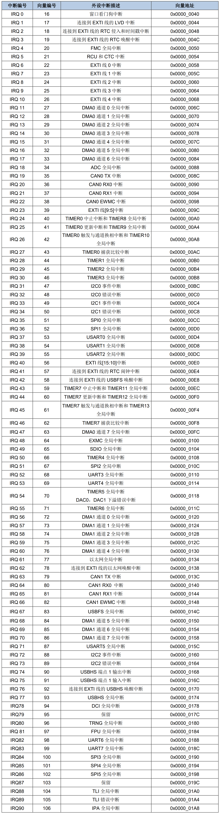

<!DOCTYPE lake>
<h2 data-lake-id="Y0oXE" id="Y0oXE"><span data-lake-id="u617546f1" id="u617546f1">中断向量表</span></h2><p data-lake-id="u34c6fb9a" id="u34c6fb9a"><span data-lake-id="u56cf6eb8" id="u56cf6eb8">什么是中断向量表：一块固定的内存，以4个字节对齐，存放各个中断服务函数程序的首地址，中断向量表定义在启动文件中，当发生中断，CPU会自动执行对应的中断服务函数</span></p><p data-lake-id="udb21138d" id="udb21138d"></p><h2 data-lake-id="YkmNB" id="YkmNB"><span data-lake-id="uf0b6a9a0" id="uf0b6a9a0">中断向量对应函数</span></h2><span class="yuque-card-unsupported">[codeblock]</span><p data-lake-id="u644dae72" id="u644dae72"><span data-lake-id="uef7b9080" id="uef7b9080">以上为 源码的摘录部分，中断函数名称命名在此处声明的。</span></p><p data-lake-id="u22ceaca6" id="u22ceaca6"><span data-lake-id="ufb1e0138" id="ufb1e0138">​</span><br/></p>